Высочайшее качество
Наши среды проходят апробацию в ведущих клиниках страны, гарантируя их высокое качество и соответствие стандартам. Каждая партия проходит MEA тест.
Мы — инновационная компания в сфере биотехнологий. Наша компания производит полную линейку сред для экстракорпорального оплодотворения (ЭКО), включая среды для отмывки, оплодотворения, культивирования, заморозки и переноса. Мы также разрабатываем среды для доращивания эмбрионов, масла и микрочипы. Наши среды проходят апробацию в ведущих клиниках страны.
Протестировать!Российский рынок сред полностью зависит от поставок сред западных компаний. Это вызывает ряд неудобств и иногда приводит к проблемам в работе. Но кто сказал, что не получится сделать российские среды качественными?
Наши среды проходят апробацию в ведущих клиниках страны, гарантируя их высокое качество и соответствие стандартам. Каждая партия проходит MEA тест.
Используем три уникальные технологии, что обеспечивает высокие показатели эффективности на уровне мировых лидеров согласно большой подтвержденной статистике.
Предлагаем полную линейку сред для всех этапов ЭКО: от отмывки до переноса, включая среды для ПГТ и активации.
Благодаря собственному складу можем оперативно доставлять продукцию с производства, сохраняя максимальный срок годности. Доставка по Москве за 1 день, по России до 7.
Наши среды используются в ведущих клиниках страны, подтверждая их надёжность и эффективность. С нами работает ФГБУ им. Кулакова, «Клиника Фомина», «Мать и Дитя».
Мы разработали схему протокола ЭКО, где продуман каждый этап. Это обеспечивает бесшовную работу и максимальную эффективность.
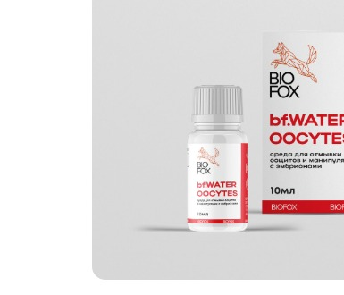
Используются для очистки эмбрионов перед оплодотворением.
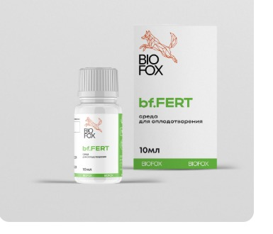
Созданы для успешного слияния сперматозоида и яйцеклетки.
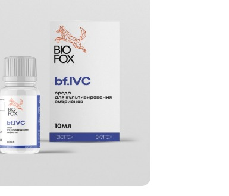
Обеспечивают оптимальные условия для развития эмбрионов.
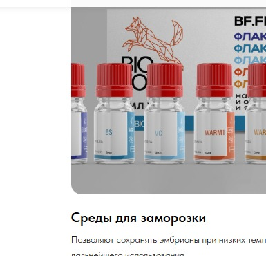
Позволяют сохранять эмбрионы при низких температурах для дальнейшего использования.
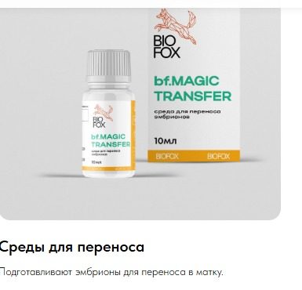
Подготавливают эмбрионы для переноса в матку.
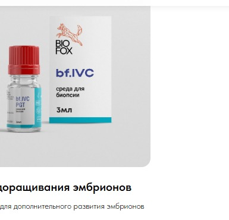
Разрабатываются для дополнительного развития эмбрионов перед переносом.
Наши преимущества: передовые R&D, контроль качества GMP, локализация производства и научное партнёрство, обеспечивающие высокую эффективность мировых лидеров.
Мы постоянно работаем над созданием новых решений и улучшением существующих продуктов.
Наши производственные процессы соответствуют международным стандартам качества GMP.
Мы обладаем тремя уникальными технологиями, которые обеспечивают высокие показатели эффективности на уровне мировых лидеров.
Наши среды проходят апробацию в ведущих клиниках страны, что гарантирует их совместимость и эффективность.
Мы активно сотрудничаем с научными учреждениями для разработки новых продуктов и технологий.
Мы поддерживаем постоянный запас продукции и осуществляем оперативную доставку прямо с производства.
Благодаря оперативной доставке наши среды сохраняют максимальный срок годности.
Мы работаем над созданием сред для доращивания эмбрионов, а также других инновационных продуктов.
Мы — команда специалистов, работающих над инновациями в биотехнологиях и повышением эффективности наших продуктов.
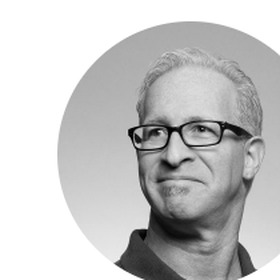
Глава СМК
Более 10 лет опыта в менеджменте качества мед. изделий.
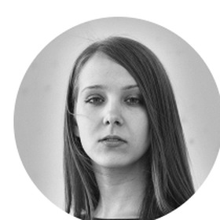
инженер-технолог
Более 10 лет опыта в разработке биотехнологических продуктов. Эксперт в области создания уникальных технологий для биотехнологий.
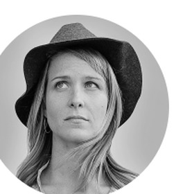
исследователь
Работает над созданием новых продуктов и улучшением качества сред.
руководитель проекта
Обеспечивает эффективное взаимодействие всех участников команды и контроль качества продукции.
Предоставляем ссылки на публикации, технические досье, протоколы работы и ответы на FAQ.
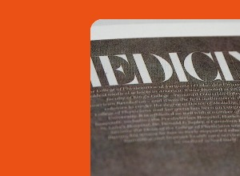
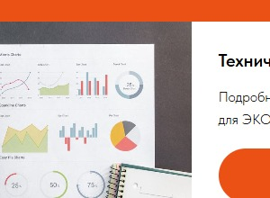
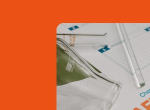
Получите бесплатные образцы наших сред для тестирования и воспользуйтесь нашей технической поддержкой. Это поможет вам убедиться в качестве и эффективности нашей продукции.
Свяжитесь с нами для получения общего каталога
г. Москва, 21й км Киевского шоссе, 3с1, 8 этаж